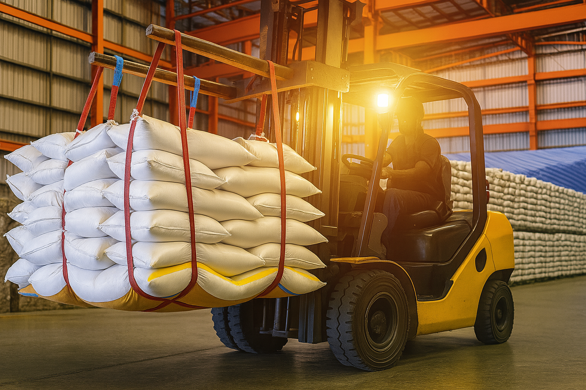

Tu Aliado en busca de mejores alternativas de la Industria Química
Nos especializamos en encontrar soluciones de abastecimiento y representación para clientes que requieren atención profesional y un enfoque personalizado en el manejo de sus cadenas de suministro estratégicas.


Contamos con una red internacional de aliados que nos permite identificar proveedores confiables en Asia, Europa y América para productos técnicos, equipo especializado y materias primas básicas.

Importaciones hacia México de tus principales materias primas, equipos y consumibles
Nuestros clientes suelen enfrentar obstáculos en el abastecimiento de materiales no comunes o en plazos cortos; Copyder de México actúa como puente para resolverlos rápidamente.
Evaluamos los mejores proveedores a nivel mundial
Transforma tus procesos con la mejor materia prima a nivel mundial
Elimina terceras empresas al contactar directamente a los fabricantes de distintas industrias
Energéticos
Combustibles, aditivos, fluidos térmicos
Lubricantes
Grasas especiales, aceites minerales, fluidos sintéticos
Tratamiento de Agua
Polímeros aniónicos, catiónicos, no iónicos.
Aditivos para procesos químicos
Químicos básicos y aditivos para la industria metalmecánica, textil, papelera y minera